Installing OpenLP on Microsoft Windows
Installing OpenLP is identical over all supported versions of Windows. After downloading the file from the website open the file by double clicking when the download is complete. After opening the downloaded file agree to open the unverified file if you are prompted. On Windows 8 you might have to click More info before you can verify by clicking Run anyway.
Next select your language and click OK
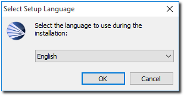After reading the welcome message click Next to continue the installation.
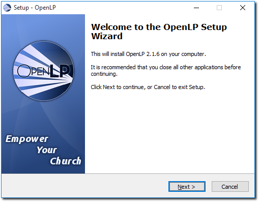Agree to the license agreement. Click Next to continue.
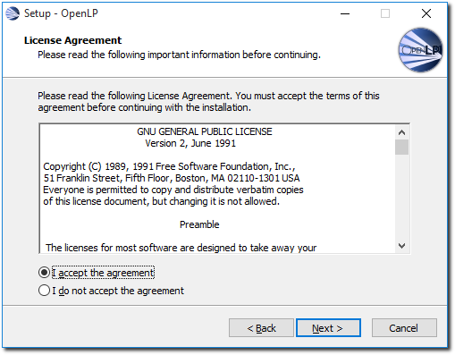Select the install location for OpenLP. Choosing the default location is generally the best choice. Click Next to continue.
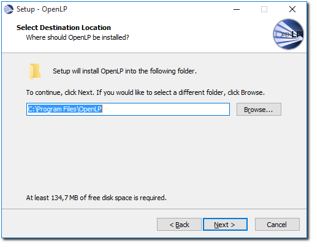Select a start menu folder for OpenLP to be visible in. The default location here is generally the best choice. Click Next to continue.
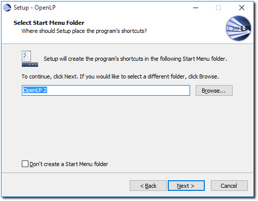Select if you want to create a desktop or Quick Launch icon. Click Next to continue.
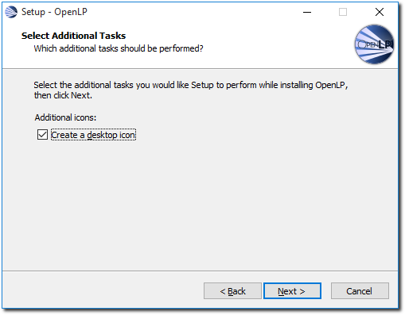Review your previous choices. If you need to make any changes click the Back button to get to the previous choices, or click Install
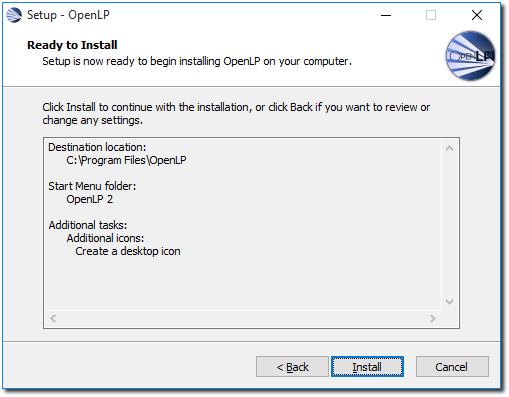The progress bar will update you on how far along the installation has gone.
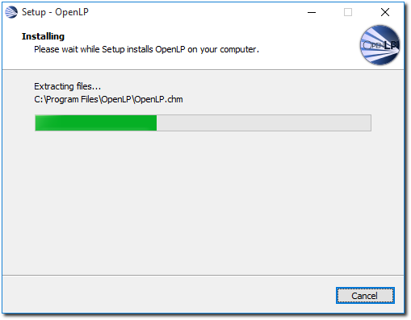When the install is complete you will have the option to launch OpenLP.
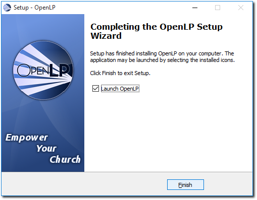After making your selection click Finish
Installing OpenLP on Mac OS X
Version 10.8 (Mountain Lion) and Newer
With the release of version 10.8 applications not downloaded throught the Mac App Store will not run by default. A setting must be changed in the Security & Privacy Settings to run OpenLP.
Click the Apple icon and open System Preferences

Open the Security & Privacy settings
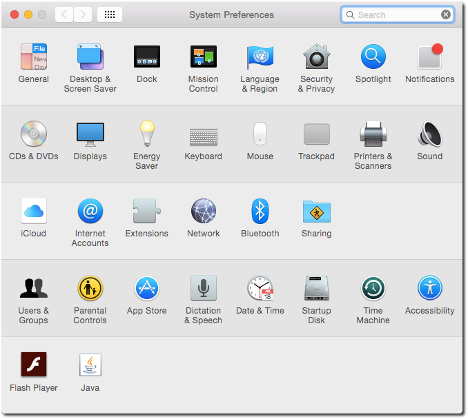Change the setting from Mac App Store to Anywhere. If the settings are grayed out click on the lock in the lower lefthand corner of the settings window to enable editing.
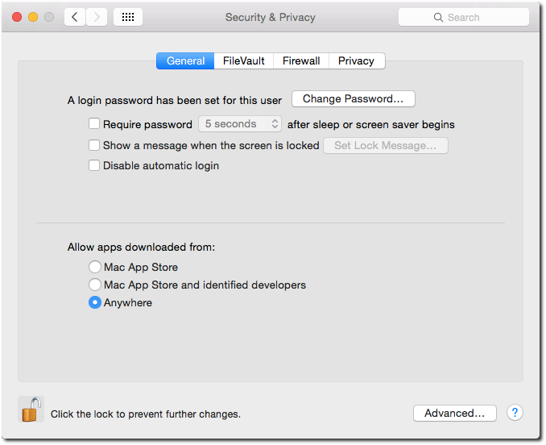If you have not already downloaded the correct file from the OpenLP website, download it now. Then double click on the .dmg file. This will open a window with two icons: An OpenLP icon and an Applications Folder icon. To install OpenLP, simply drag the OpenLP icon over to the Applications folder icon and you will be ready to use OpenLP. OpenLP will be available in your Applications folder.
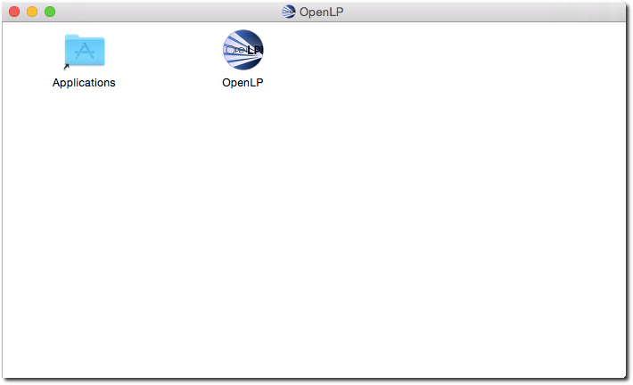